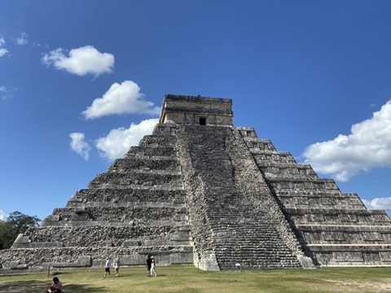
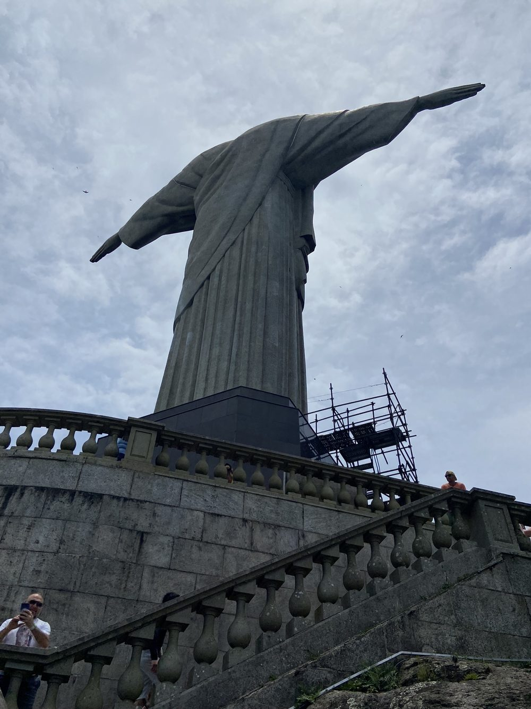
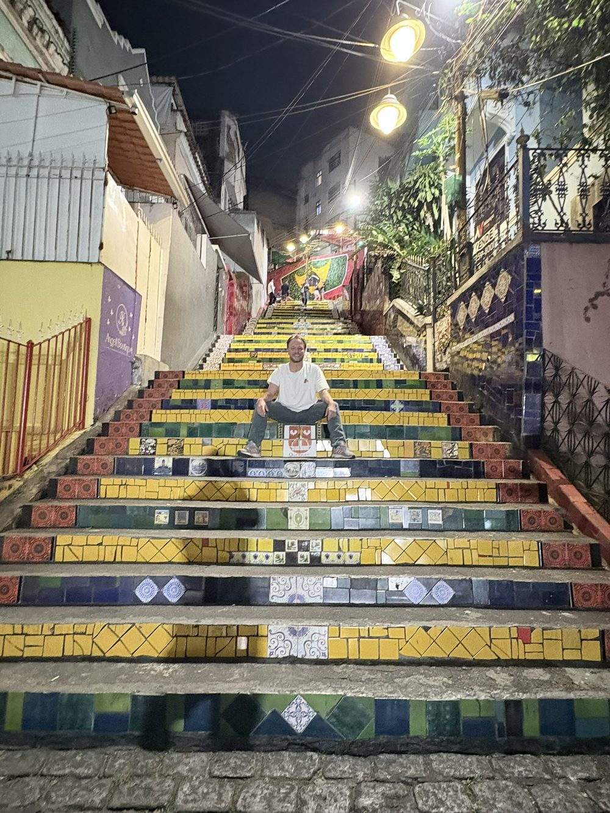

Best of Georgia & ArmeniaJerewan → Tiflis · Juli 2026 · 9 Tage
Best of Georgia & ArmeniaJerewan → Tiflis · Juli 2026 · 9 Tage
 Haute RouteWalliser Alpen · ab 19. Juli 2026 · wächst mit jeder Etappe
Haute RouteWalliser Alpen · ab 19. Juli 2026 · wächst mit jeder Etappe

MexikoMexiko-Stadt → Yucatán · Jan./Feb. 2023 · 17 Tage
Brasilien 2024Rio → São Paulo → Florianópolis · Nov. 2024 · 19 Tage
Brasilien 2025Rio de Janeiro · Ilha Grande · Petrópolis · Nov. 2025 · 10 Tage